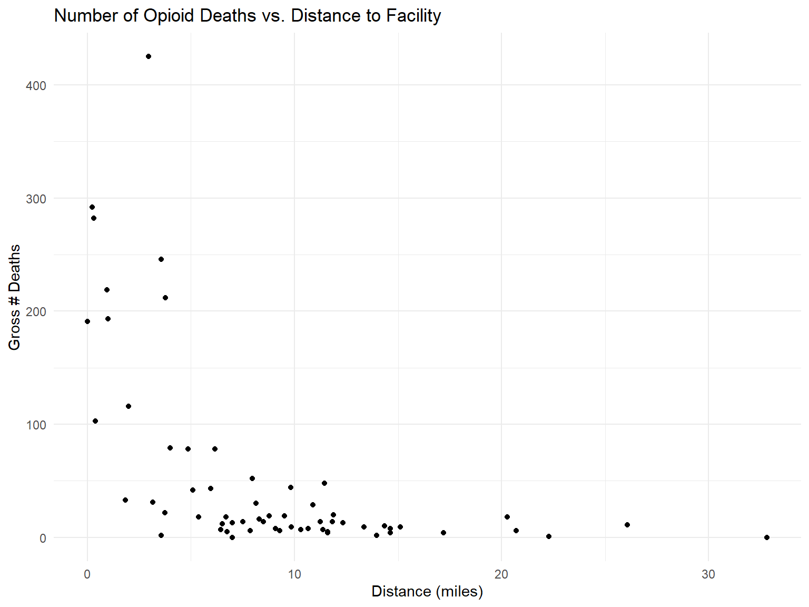
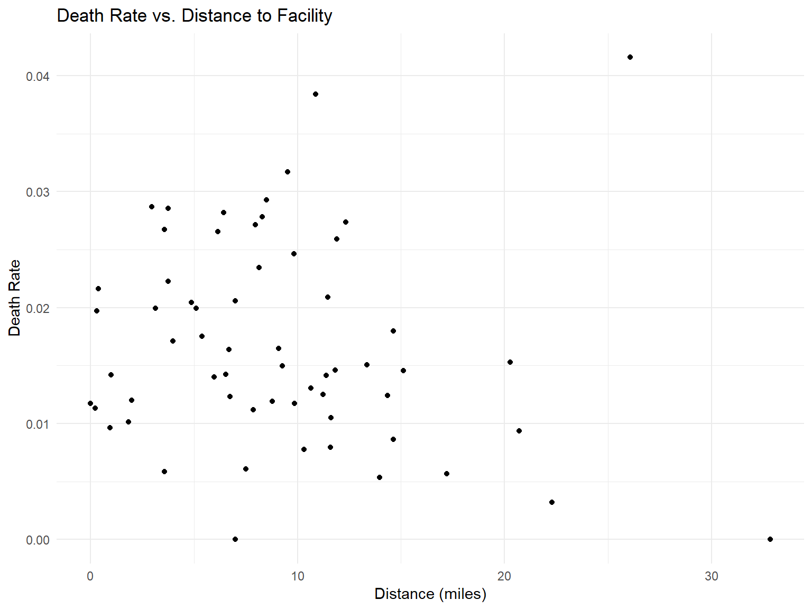
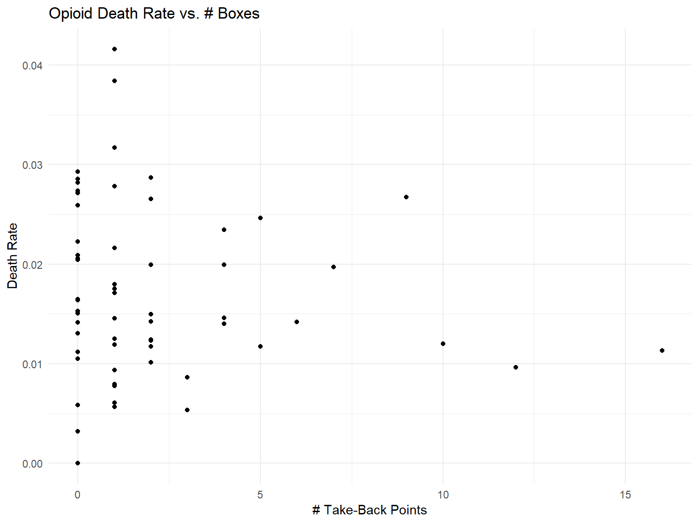
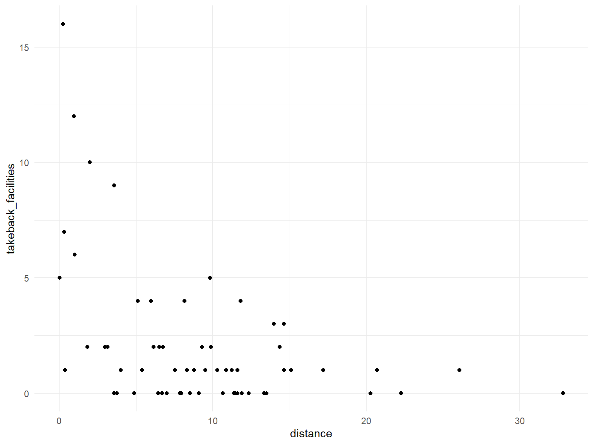

Here we present some visualizations we created as part of an exploratory data analysis of the opioid epidemic in NYC. These figures are meant to give an overview of some of the interesting findings and key takeaways; however this is a complex topic and these should be considered in the larger context of the epidemic.
We first explore the research question: Is there any relationship between number of ER visits in a county and distance to the nearest treatment facility?
Note that because the “distance to nearest treatment facility” data is from 2017, we will look at opioid deaths in just 2017.

There is no clear relationship in the above graphs, counter to our hypothesis. If anything the first graph shows a decrease in gross deaths as the distance to a treatment facility increases. However the more telling graph is the second where the y axis represents the death rate (deaths / county population), and this graph does not have any discernible pattern.
We can also look at whether opioid deaths are associated with/influenced by the presence of “pill take-back” boxes around NYC. These drop-off points are part of a public health initiative intended to encourage responsible use and disposal of opioids. To do this we include a dataset that lists the addresses of these take-back facilities, counting and sorting by county.

We plot the distance to the closest treatment facility in each county vs the number of takeback facilities in that county. We find that counties that are closer to treatment facilities also tend to have more takeback facilities.

Next we look at opioid deaths sorted by 2 demographic variables: race and age.
Count of deaths by race from 2003 to 2017:
Count of deaths by age group from 2003 to 2017:
We can see that the majority of deaths occur in white males by far. Also it appears that the most affected age groups are….